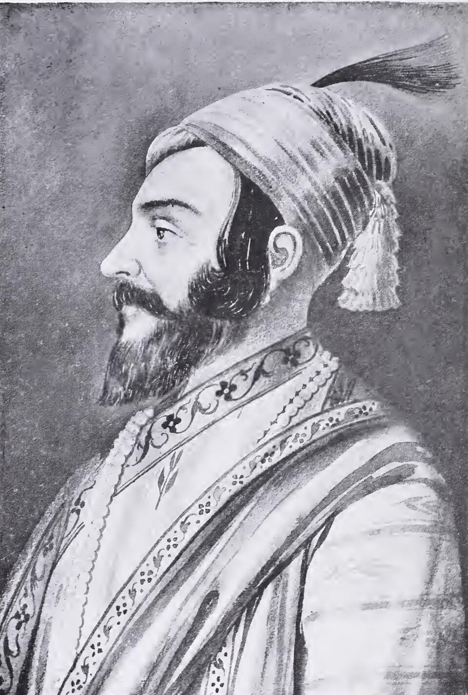

Virupaksha Temple at Hampi (Karnataka, UNESCO 1986) — the capital of the Vijayanagara Empire (1336–1646 CE). Hampi was one of the richest cities in the world during the reign of Krishnadevaraya (1509–1529). The empire was founded by Harihara I and Bukka Raya I (Sangama dynasty) to resist the Bahmani Sultanate and protect Hindu culture in South India.

Chhatrapati Shivaji Maharaj (1630–1680) — founder of the Maratha Empire. Crowned at Raigad Fort in 1674 with the title 'Chhatrapati' (paramount sovereign). Created the Ashtapradhan (eight-minister council) and pioneered guerrilla warfare (Ganimi Kava). His navy challenged European powers along the Konkan coast. Bihar connection: Maratha Bargi raids (1740s–50s) weakened Bengal-Bihar, paving the way for British dominance after Plassey (1757) and Buxar (1764).
💡 Deep-dive ready: Complete analysis of Vijayanagara, Bahmani, Maratha Empire, Sikh Empire, Bihar connections, and 7 exam predictions:
South & Marathas Master Detail →
A. Vijayanagara Empire — Four Dynasties EXAM CORE
Dynasty
Period
Founder
Key Rulers
Sangama
1336-1485
Harihara I & Bukka Raya I
Harihara I, Bukka Raya I, Devaraya II
Saluva
1485-1505
Saluva Narasimha
Saluva Narasimha, Immadi Narasimha
Tuluva
1505-1570
Vira Narasimha
Krishnadevaraya (1509-1529) — greatest ruler
Aravidu
1570-1646
Tirumala Raya
Rama Raya (killed at Talikota 1565), Tirumala Raya
B. Bahmani Kingdom & Five Deccan Sultanates PYQ PATTERN
State
Founded
Dynasty
Capital
Annexed by Aurangzeb
Bahmani Kingdom
1347
Bahmani (Hasan Gangu)
Gulbarga → Bidar (1425)
Broke up c. 1490-1527
Bijapur
1490
Adil Shahi
Bijapur
1686
Ahmadnagar
1490
Nizam Shahi
Ahmadnagar
1633 (Shah Jahan)
Berar
1490
Imad Shahi
Ellichpur
1574 (Ahmadnagar)
Bidar
1528
Barid Shahi
Bidar
1619 (Bijapur)
Golconda
1518
Qutb Shahi
Golconda/Hyderabad
1687
🧠 Fact Matrix & Key Data
C. Krishnadevaraya — Greatest Vijayanagara Ruler EXAM PATTERN
Aspect
Detail
Reign
1509-1529 (Tuluva Dynasty)
Title
'Andhra Bhoja' (patron of Telugu), 'Muru Rayara Ganda' (Lord of Three Kings)
Military
Conquered Raichur Doab from Bijapur; defeated Bahmani remnants; controlled all South India south of Krishna River
Marathas vs Ahmad Shah Abdali — Maratha defeat; weakened the empire
E. Shivaji's Ashtapradhan (Eight Ministers) EXAM PATTERN
#
Position
Portfolio
1
Peshwa
Prime Minister (Moropant Pingle)
2
Amatya/Majumdar
Finance
3
Sachiv (Shurnis)
Secretary / Royal correspondence
4
Mantri
Chronicles / Intelligence
5
Senapati
Army Commander
6
Sumant
Foreign Affairs
7
Nyayadhish
Justice (Chief Justice)
8
Pandit Rao
Religion / Charity / Education
🧠 Mnemonic — S-S-T-A (Vijayanagara dynasties): Sangama (1336) → Saluva (1485) → Tuluva (1505, Krishnadevaraya) → Aravidu (1570). "SSTA: four dynasties of Vijayanagara, 310 years (1336-1646)."
Maratha key dates: Shivaji born 1630 → crowned 1674 → died 1680 → Bajirao I 1720-1740 → Panipat III 1761.
🔶 Bihar Connection
Bihar — Maratha Influence & the Battle of Buxar
Maratha raids into Bihar: in the 1740s-1750s, the Maratha Confederacy (under Raghuji Bhonsle of Nagpur) conducted raids into Bengal and Bihar — known as 'Bargi' raids. The Marathas extracted 'chauth' (one-fourth of revenue) from Bengal-Bihar. These raids weakened the Nawab of Bengal's control over Bihar and created instability that the British would later exploit. The people of Bihar and Bengal still use 'Bargi' as a term of fear in folk songs and stories.
Maratha influence at the Battle of Buxar (1764, Bihar): the Battle of Buxar (October 22, 1764, in Buxar, Bihar) was fought between the British East India Company and the combined armies of the Nawab of Bengal (Mir Qasim), the Nawab of Awadh (Shuja-ud-Daula), and the Mughal Emperor (Shah Alam II). While the Marathas were not direct participants, the weakening of Mughal and regional power by decades of Maratha expansion created the power vacuum that the British filled. Bihar became a British territory after Buxar (Diwani of Bengal, Bihar, and Odisha, 1765).
Third Battle of Panipat (1761) and Bihar: the Maratha defeat at Panipat III (1761) weakened the Maratha Confederacy so much that they could no longer threaten Bengal-Bihar. This allowed the British to consolidate their position in Bengal and Bihar — leading to the Battle of Buxar (1764) and British rule over Bihar. The connection: Maratha weakness → British strength in Bihar.
Nawab of Bengal's Bihar territories: Bihar was under the Nawab of Bengal (who ruled from Murshidabad). The Maratha raids forced the Nawab to pay chauth to the Marathas. After the Battle of Plassey (1757), the British controlled the Nawab of Bengal — and hence Bihar. Bihar's fate was thus indirectly linked to the Maratha-Bengal-British power dynamics.
Alivardi Khan and the Marathas: Alivardi Khan (Nawab of Bengal, 1740-1756) spent much of his reign fighting Maratha raids into Bengal and Bihar. He signed a treaty with the Marathas (1751) ceding Orissa (Cuttack) and agreeing to pay 12 lakh rupees as chauth for Bengal and Bihar. This treaty brought temporary peace but weakened Bengal-Bihar — paving the way for British dominance after Plassey (1757).
🔗 Cross-Topic Connections
Topic 140 (Mughal Empire): Aurangzeb's 25-year Deccan campaign (1682-1707) was against the Marathas and the Deccan Sultanates. He annexed Bijapur (1686) and Golconda (1687) but could not defeat the Marathas. His failure in the Deccan led to the Mughal Empire's decline — and the rise of the Maratha Confederacy.
Topic 138 (Delhi Sultanate): The Bahmani Kingdom (1347) was founded when Hasan Gangu rebelled against Muhammad bin Tughlaq of the Delhi Sultanate. The Vijayanagara Empire (1336) was also founded during the Delhi Sultanate period — as a Hindu resistance to the southward expansion of the Sultanate.
Topic 139 (Bhakti & Sufi): The Bhakti movement originated in South India (Alvars and Nayanars, 7th-9th c.) — the same region where the Vijayanagara Empire later flourished. The Vijayanagara rulers were great patrons of Hindu religion and culture — building temples and supporting Bhakti traditions.
📰 Current Relevance
Hampi (Karnataka): UNESCO World Heritage Site (1986). The ruins of the Vijayanagara capital cover 4,100+ hectares — one of the largest medieval city sites in the world. The Virupaksha Temple is still a functioning pilgrimage site. Hampi is a major tourist destination.
Shivaji's legacy: Chhatrapati Shivaji is a national hero — the Indian Navy's training academy is INS Shivaji (Lonavala). Mumbai's international airport is Chhatrapati Shivaji Maharaj International Airport. A giant statue of Shivaji overlooks the Arabian Sea in Mumbai.
Maratha forts: several Maratha forts in the Sahyadri mountains are UNESCO World Heritage Sites (2018) — Raigad, Shivneri, Pratapgad, Sindhudurg, and others are part of the 'Maratha Military Landscapes of India' nomination.
Gol Gumbaz (Bijapur): the tomb of Muhammad Adil Shah (1656) — the second-largest dome in the world (after St. Peter's Basilica). Known for its 'whispering gallery' — where even a whisper echoes 11 times. A major tourist attraction in Karnataka.
Sikh Empire legacy: Maharaja Ranjit Singh's reign is remembered as a golden age for the Sikhs. The Koh-i-Noor diamond (from his treasury) is now in the British Crown Jewels. The Harmandir Sahib (Golden Temple, Amritsar) was gold-plated during his reign.
Maratha Navy Day: the Indian Navy celebrates December 4 as Navy Day — commemorating Operation Trident (1971). Shivaji's naval vision is credited as the foundation of the Indian Navy — the Indian Naval Ensign now features Shivaji's royal seal.
✍️ MCQ Practice Set — 25 Questions (BPSC Level)
Test your knowledge. Select the best answer for each question, then click "Check Answers" to see your score and explanations.
Your Score: 0/25
Q1. The Vijayanagara Empire was founded in 1336 CE by which brothers?
✅ Correct Answer: (D) — Harihara I and Bukka Raya I founded the Vijayanagara Empire in 1336 CE (Sangama Dynasty). Capital: Vijayanagara (Hampi, Tungabhadra River, Karnataka). They were originally in Kakatiya service, converted to Islam by Muhammad bin Tughlaq, then reconverted to Hinduism by sage Vidyaranya. The empire lasted until 1646 CE (310 years).
Q2. The Vijayanagara Empire had how many ruling dynasties?
✅ Correct Answer: (C) — Four dynasties: Sangama (1336-1485), Saluva (1485-1505), Tuluva (1505-1570, includes Krishnadevaraya), Aravidu (1570-1646, ruled after Talikota). Mnemonic: S-S-T-A.
Q3. Krishnadevaraya (1509-1529), the greatest ruler of the Vijayanagara Empire, belonged to which dynasty?
✅ Correct Answer: (D) — Krishnadevaraya belonged to the Tuluva Dynasty. Greatest Vijayanagara ruler: conquered Raichur Doab, patron of Telugu literature (Amuktamalyada), Ashtadiggajas (8 poets including Allasani Peddana). Called 'Andhra Bhoja' and 'Muru Rayara Ganda.'
Q4. The Bahmani Kingdom (1347-1527) was founded by whom?
✅ Correct Answer: (C) — Alauddin Hasan Bahman Shah (Hasan Gangu) founded the Bahmani Kingdom in 1347 CE by rebelling against Muhammad bin Tughlaq (Delhi Sultanate). Capital: Gulbarga (→ Bidar, 1425). First independent Muslim kingdom of the Deccan. Broke into 5 Deccan Sultanates (c. 1490-1527).
Q5. The Bahmani Kingdom broke up into how many Deccan Sultanates?
Q6. Mahmud Gawan, the famous prime minister of the Bahmani Kingdom, was known for which contribution?
✅ Correct Answer: (D) — Mahmud Gawan (1411-1481) was PM under Muhammad Shah III. Reformed land revenue, reorganised the army, founded the Madrasa at Bidar. Falsely accused of treason and executed (1481). His death marked the Bahmani Kingdom's decline.
Q7. The Battle of Talikota (1565) was fought between the Vijayanagara Empire and which opponents?
✅ Correct Answer: (C) — The Battle of Talikota (Jan 23, 1565, also called Rakshasi-Tangadi) was between Vijayanagara (Rama Raya, Aravidu) and a coalition of 5 Deccan Sultanates. Vijayanagara was decisively defeated — Rama Raya beheaded, Hampi sacked and destroyed. Marked the end of Vijayanagara as a major power.
Q8. The ruins of the Vijayanagara Empire's capital are located at which UNESCO World Heritage Site?
✅ Correct Answer: (C) — Hampi (Karnataka) is the site of the ruins of Vijayanagara's capital. UNESCO World Heritage Site (1986). Contains Virupaksha Temple, Vittala Temple (stone chariot), Lotus Mahal, elephant stables. After Talikota (1565), the city was sacked — ruins cover 4,100+ hectares.
Q9. The Maratha Empire was founded by which ruler?
✅ Correct Answer: (A) — Chhatrapati Shivaji Maharaj (1630-1680) founded the Maratha Empire. Born at Shivneri Fort to Shahji Bhonsle and Jijabai. Carved an independent kingdom from Bijapur Sultanate and Mughal Empire. Crowned Chhatrapati at Raigad (June 6, 1674). Used guerrilla warfare (Ganimi Kava) and built a navy.
Q10. Shivaji's coronation as Chhatrapati took place in which year and at which fort?
✅ Correct Answer: (C) — Shivaji was crowned Chhatrapati on June 6, 1674, at Raigad Fort (his capital). Priest Gaga Bhatt (from Varanasi) conferred Kshatriya status. Title 'Chhatrapati' = Lord of the Umbrella (symbol of sovereignty). Founded the Ashtapradhan (council of 8 ministers) and the Maratha navy.
Q11. Shivaji's guerrilla warfare tactic was known by which term?
✅ Correct Answer: (D) — Ganimi Kava = guerrilla tactics: avoid open battle with larger armies, use surprise attacks and ambushes, exploit mountainous terrain (Sahyadri), build a network of ~300-360 forts. This allowed Shivaji to defeat armies many times his size.
Q12. Shivaji's council of eight ministers was known as:
✅ Correct Answer: (D) — Ashtapradhan: (1) Peshwa (PM), (2) Amatya/Majumdar (Finance), (3) Sachiv (Secretary), (4) Mantri (Intelligence), (5) Senapati (Army), (6) Sumant (Foreign Affairs), (7) Nyayadhish (Justice), (8) Pandit Rao (Religion). The Peshwa eventually became de facto ruler.
Q13. Shivaji famously escaped from Aurangzeb's imprisonment at which Mughal court?
✅ Correct Answer: (C) — Shivaji was invited to Agra by Aurangzeb (1666) and placed under house arrest. He famously escaped (tradition says by hiding in sweet baskets) and fled to the Deccan. After his return, he resumed campaigns and was crowned Chhatrapati (1674).
Q14. Shivaji's navy was significant because:
✅ Correct Answer: (D) — Shivaji built a navy of ~500 ships to counter European naval power on the western coast. Naval bases at Kolaba, Vijaydurg, Sindhudurg. He is considered the father of the Indian Navy — INS Shivaji (Lonavala) is named after him. First Indian ruler to recognise the importance of naval power.
Q15. The Third Battle of Panipat (1761) was fought between the Marathas and which opponent?
✅ Correct Answer: (A) — Third Battle of Panipat (Jan 14, 1761): Marathas (Sadashivrao Bhau) vs Ahmad Shah Abdali (Afghanistan). Marathas decisively defeated — Vishwasrao and Sadashivrao killed. One of the bloodiest battles of the 18th century. Severely weakened the Maratha Empire and paved the way for British dominance.
Q16. Bajirao I (1720-1740), the great Maratha Peshwa, is known for which military achievement?
✅ Correct Answer: (B) — Bajirao I (1700-1740, Peshwa 1720-1740) never lost a battle in 20 years (41 battles). Defeated the Nizam (Palkhed 1728), reached Delhi (1737), conquered Portuguese bases. Compared to Napoleon by Sir Jadunath Sarkar. Died at 39.
Q17. The Vijayanagara Empire's most famous foreign visitors, who described the empire in detail, included:
✅ Correct Answer: (D) — Foreign visitors to Vijayanagara: Nicolo Conti (Italian, 1420), Abdur Razzaq (Persian, 1442), Domingo Paes (Portuguese, c. 1520 — 'best-provided city in the world'), Fernao Nuniz (Portuguese, c. 1537). Their accounts are the primary sources for Vijayanagara's history.
Q18. Krishnadevaraya's court had the 'Ashtadiggajas' (eight great poets). Who was the most famous among them?
✅ Correct Answer: (C) — Allasani Peddana was called 'Andhra Pitamaha' (grandfather of Telugu literature). His 'Manucharitra' is a Telugu masterpiece. Tenali Ramalinga (Tenali Raman) was another famous Ashtadiggaja — known for wit. The Ashtadiggajas were the Telugu equivalent of Akbar's Navaratna.
Q19. The Bahmani Kingdom's capital was initially at Gulbarga. It was later shifted to which city?
✅ Correct Answer: (D) — Capital shifted from Gulbarga to Bidar (1425) by Ahmad Shah Wali. Bidar became the cultural centre — Mahmud Gawan's Madrasa was built there. The Bahmani Kingdom declined after Gawan's execution (1481) and broke into 5 Deccan Sultanates (c. 1490-1527).
Q20. The Maratha Confederacy, which dominated India in the 18th century, was led by which Peshwa dynasty?
✅ Correct Answer: (A) — The Peshwa dynasty of Pune (Bhat family) led the Maratha Confederacy. Five major houses: Peshwa of Pune, Scindia of Gwalior, Holkar of Indore, Gaekwad of Baroda, Bhonsle of Nagpur. Dominated India from 1720s until Panipat III (1761) and finally defeated by British in Anglo-Maratha Wars (1775-1818).
Q21. The Sikh Empire in Punjab was founded by which ruler?
✅ Correct Answer: (A) — Maharaja Ranjit Singh (1780-1839) founded the Sikh Empire (1799). 'Sher-e-Punjab.' Unified Sikh misls, conquered Lahore (1799), Amritsar, Peshawar, Kashmir, Multan. Army with European officers. Koh-i-Noor in his treasury. Empire annexed by British (1845-1849, Anglo-Sikh Wars).
Q22. The Vijayanagara Empire's administrative system featured which key institution?
✅ Correct Answer: (A) — The Nayankara system: land granted to military chiefs (nayakas) who provided troops and revenue to the king. Similar to feudalism but nayakas were transferable and lands were not hereditary. Empire divided into rajyas (provinces), nadus (districts), sthalas (villages).
Q23. Shivaji's father, Shahji Bhonsle, served as a general in which Deccan Sultanate?
✅ Correct Answer: (D) — Shahji Bhonsle (1594-1664) was a Maratha general in the Bijapur Sultanate's service. He held jagirs in Pune, Supe, and Chakan. His service allowed Shivaji to grow up in Pune (under Jijabai and Dadaji Kondadev) — where he built his power base.
Q24. Which Mughal emperor's Deccan campaign (1682-1707) led to the annexation of Bijapur and Golconda but also exhausted the Mughal Empire?
✅ Correct Answer: (C) — Aurangzeb's 25-year Deccan campaign (1682-1707): annexed Bijapur (1686) and Golconda (1687) but could not defeat the Marathas. The relentless guerrilla warfare exhausted the Mughal treasury. He died at Ahmednagar (1707, age 88). Key reason for the Mughal Empire's decline.
Q25. The Maratha raids into Bengal and Bihar in the 1740s-1750s were known by which term?
✅ Correct Answer: (B) — The 'Bargi' raids by Raghuji Bhonsle (Nagpur) devastated Bengal and Bihar in the 1740s-1750s. The Marathas extracted 'chauth' (1/4 of revenue). Alivardi Khan (Nawab of Bengal) signed a treaty (1751) ceding Orissa and paying 12 lakh rupees. These raids weakened Bengal-Bihar — paving the way for British dominance after Plassey (1757).
🎯 Exam Predictions
P1Shivaji (HIGH): founded Maratha Empire, crowned 1674 (Raigad), Ashtapradhan (8 ministers), Ganimi Kava (guerrilla), navy, escaped from Agra (1666). Father: Shahji Bhonsle (Bijapur general). Know all details — very high PYQ frequency.
P2Vijayanagara Empire (HIGH): founded 1336 (Harihara I & Bukka Raya I), 4 dynasties (S-S-T-A), Krishnadevaraya (Tuluva, greatest, Ashtadiggajas), Hampi (UNESCO 1986), Battle of Talikota (1565, vs 5 Deccan Sultanates).
P3Bahmani Kingdom (MEDIUM): founded 1347 (Hasan Gangu/Alauddin Hasan Bahman Shah), capital Gulbarga→Bidar (1425), Mahmud Gawan (PM, Madrasa at Bidar, executed 1481), broke into 5 Deccan Sultanates.
P4Bihar — Bargi raids (MEDIUM): Maratha raids (Bargi) into Bengal-Bihar (1740s-50s) by Raghuji Bhonsle. Extracted chauth. Alivardi Khan's treaty (1751). Weakened Bengal-Bihar → British dominance (Plassey 1757, Buxar 1764).
P5Bajirao I (MEDIUM): Peshwa (1720-1740), 41 battles never lost, reached Delhi (1737), defeated Nizam (Palkhed 1728), conquered Portuguese bases. Compared to Napoleon. Died at 39.
P6Third Battle of Panipat (LOW): 1761, Marathas vs Ahmad Shah Abdali. Maratha defeat — Vishwasrao and Sadashivrao killed. Severely weakened Maratha Empire → British dominance.
P7Sikh Empire (LOW): Ranjit Singh (1799-1839, Sher-e-Punjab), unified Sikh misls, Koh-i-Noor, Anglo-Sikh Wars (1845-1849). Not as frequently asked but may appear as a supplementary question.
📖 References
Satish Chandra, Medieval India, Volume 2
Sir Jadunath Sarkar, History of Aurangzib (5 volumes) and Shivaji and His Times
Stewart Gordon, The Marathas 1600-1818 (The New Cambridge History of India)